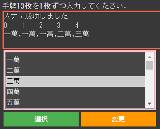

ABOUT
| Nickname | kunikyu |
|---|---|
| Affiliation | 大阪公立大学工業高等専門学校 知能情報コース2年 |
飽きっぽい性格の大阪の高専生です。
特定の趣味は持っていないです。
WORK

スイカDEゲーム
ヨッシーのたまご風のゲームです。
第59回大阪公立大学工業高等専門学校高専祭のクラス展示にて展示を行った作品です。
html/cssの一部とjavascriptを担当しました。

麻雀の待ち判定システム
麻雀の待ちを判定するシステムです。
学校の課題で作成したもので、Python, google colaboratoryで開発しました。
正確でない場合があることを確認しています。